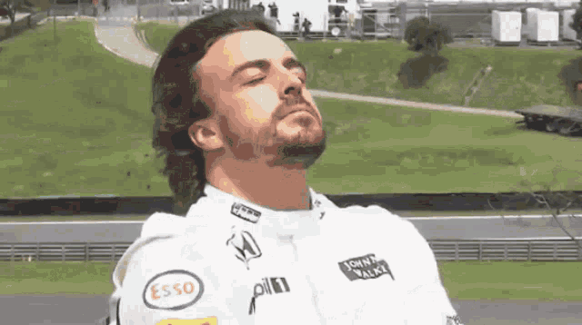

Fernando Alonso es un piloto español de Fórmula 1 que, pese a su amplia experiencia en el automovilismo, afronta cada nuevo reto con la mentalidad y la ambición de un rookie. Bicampeón del mundo en 2005 y 2006 con Renault, ha competido con equipos históricos como McLaren, Ferrari y Alpine, demostrando su talento, constancia y capacidad de adaptación. Con una trayectoria que abarca varias generaciones de la Fórmula 1, Alonso sigue persiguiendo nuevos objetivos y demostrando que la experiencia y el hambre de victoria pueden ir de la mano.
La historia de nuestro Rookie